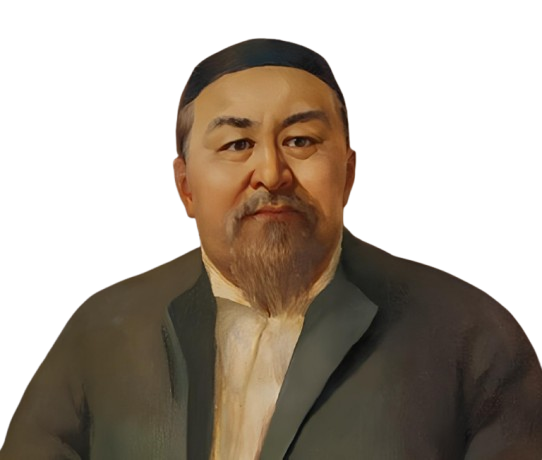
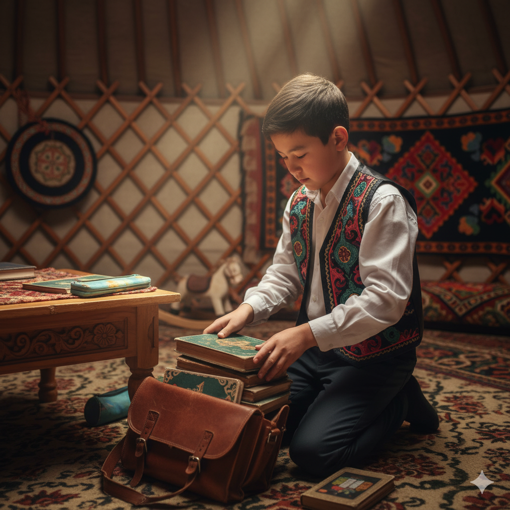
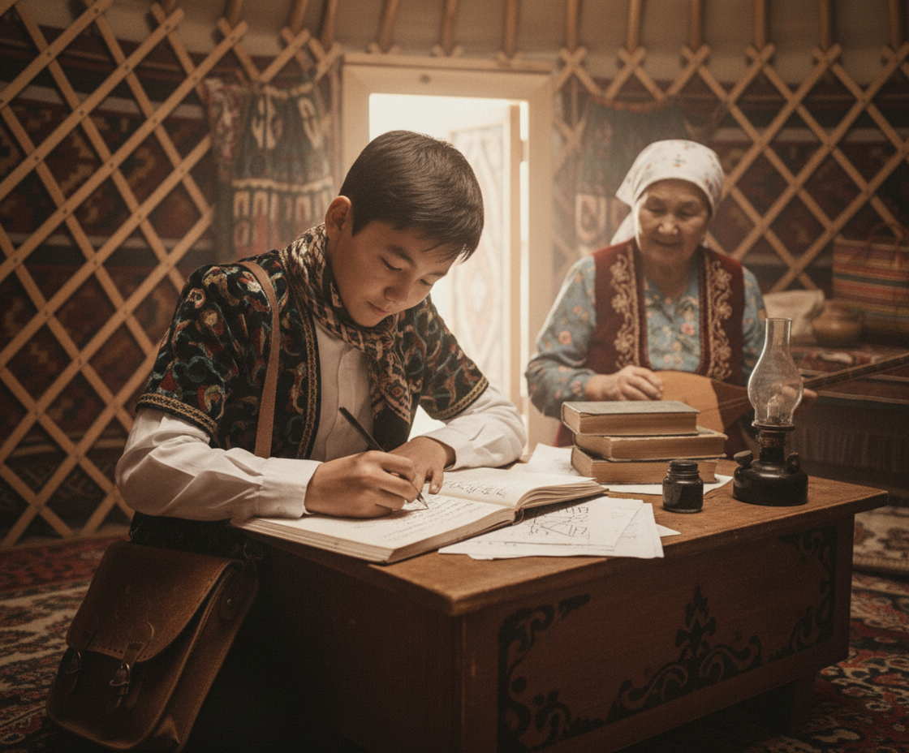
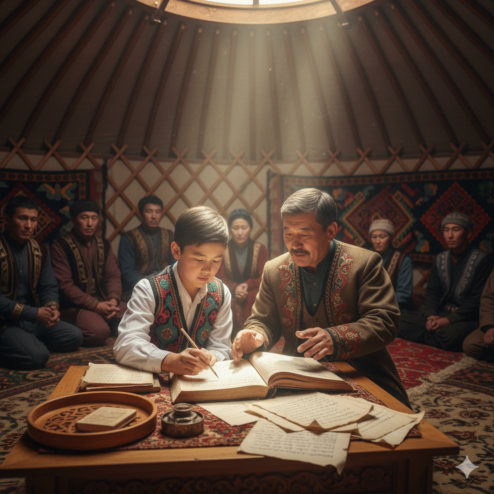
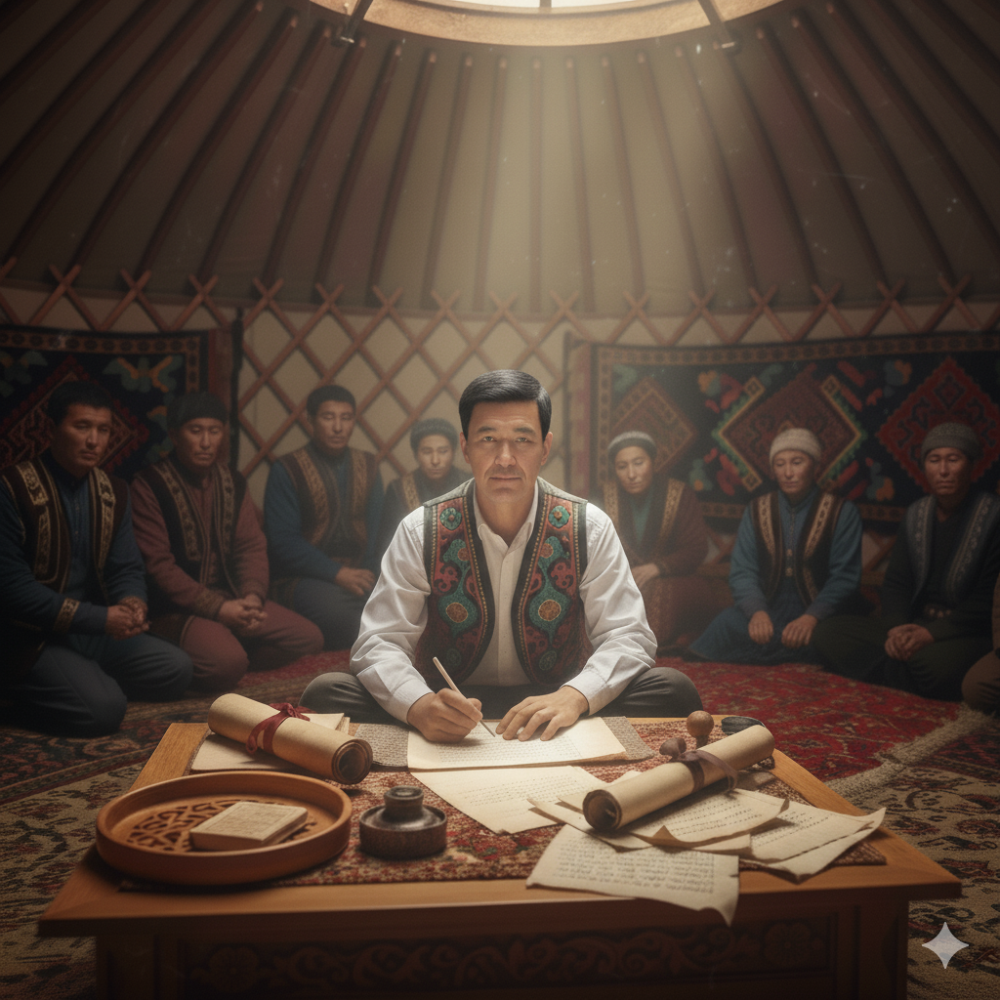
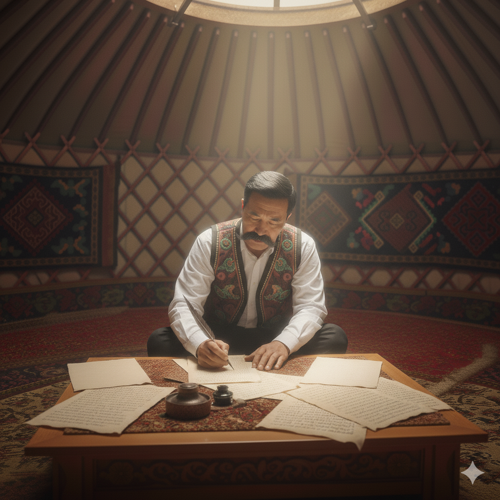
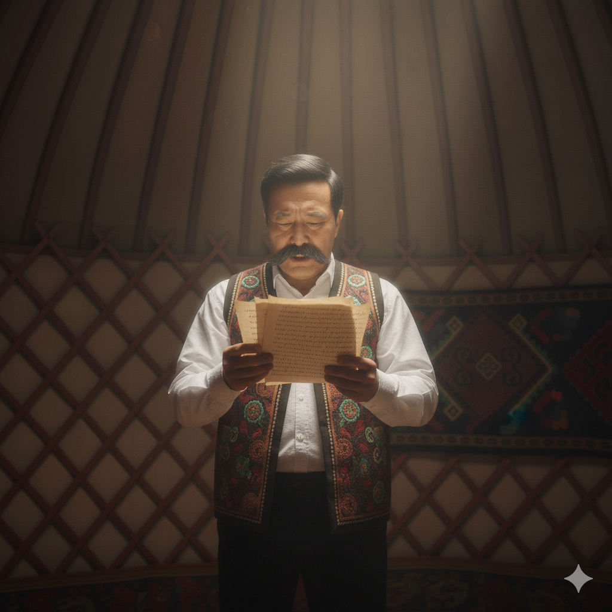

📜 Қазақтың ұлы ақыны, философы және ойшылы.
📅 1845–1904 жылдар аралығында өмір сүрген.
📍 Семей өңірі, Қазақстан.

📜 Қазақтың ұлы ақыны, философы және ойшылы.
📅 1845–1904 жылдар аралығында өмір сүрген.
📍 Семей өңірі, Қазақстан.
#Семей #1845-жыл

#Ахмет риза медресесі #10 жас

#Ақын #10 жас #алғашқы өлең

#13 жас #ел ісі #басқару

#болыс #1876 #әділ басшы
#орыс жазушылары #зерттеу #аударма
#ақын #өлең #жаз

#эпостық поэма #ескендір

#45 қара сөз #қазақ халқының мәселесі
#1904-жыл #Жидебай #Семей облысы